In July and August 1968, I travelled from Australia to Britain on the Shaw Savill Line ship Southern Cross, in order to study in Oxford. I boarded the ship in Sydney; it called at Melbourne, Fremantle, Durban, Cape Town, and Las Palmas before arriving in Southampton five weeks later. The possibility of travelling overland between Durban and Cape Town was provided; I took it, and here is the diary I kept at the time. I have removed material not about the trip; it is otherwise unchanged, apart from a postscript about things which I remember but didn't record. This was the first country other than my native land that I had seen.
I took the photos with my Fujica SLR camera; I digitised the slides in 2009.
| 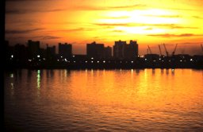 | 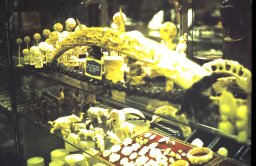 |
| Durban docks | Indian markets |
Today we started the Durban – Cape Town overland trip. Some of the more vivid impressions follow.
|
Two Zulu guitarists sitting by the side of the road, waiting for the bus. They both had very poor quality guitars, but their rattling added a beautiful fuzz-like distortion. The rhythm player was laying down a beat which was irresistible to a little boy, who couldn't keep his feet still. The progressions were simple and repetitive, e.g. D, G, A, D or 12 bar blues. The lead player was left-handed, and was playing simple but chordy improvising. His control was excellent and he moved all over the fretboard without a glance at it. His style was different from anything I have heard and his timing perfect. |
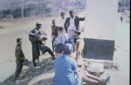 |
A tree whose leaves were different in colour underneath and above, giving it a totally different effect from different angles.
The quaint road signs: e.g. "Slow" followed a few hundred yards later by "Slower"; "Detour ahead. Please be patient."
The excessively Old English hotel where we had lunch; the format of the menu was very similar to menus on board ship, which leads me to suspect that it is a typical English format.
Erosion in a gully, forming several "carved pillars" standing straight up (about eight feet tall and eighteen inches wide, with a pinnacle roof on top).
General comments: the enormous number of spacious luxurious houses on the outskirts of Durban.
The native and Indian markets, particularly the food which seemed very attractive to me (probably because of its strangeness).
The countryside, giving the appearance of a very severe drought, not like Australian countryside where the vegetation adapts to the rainfall. Scattered everywhere are the native huts, round and white with conical thatched roofs. At night there are numerous fires to be observed, similar to stubble fires but clearly not these (because of the striking absence of crops of any kind and the poorness of those that exist). I noticed one small group of huts silhouetted against the illuminated smoke of a ring of fire.
The isolated natives, on foot or bicycle, on country roads, whom the driver made no effort to avoid.
The Holden with the Mercedes and Humbers outside the Hilton Hotel, and the Arthur Upfield book in a shop at Kokstad.
Dancing with Mary at an Afrikaans dance with four bandsmen and eleven spectators.
The tour took us through the Transkei (the self-governing Bantu territory) and on to Grahamstown, the City of Saints, for the night.
Most of the Transkei was quite heavily populated and the round white huts were scattered on the lower slopes of the barren mountains in their tens of thousands. Closer to the Kei River (the Cape Province border) the country became more rugged and huts fewer.
| 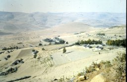 | 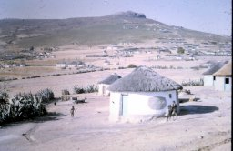 |
| Transkei | A hut |
Impressions:
A FM transmitting mast on a bleak mountain overlooking thousands of huts. The station was broadcasting in the Xhosa tongue. The guide told us that many natives have transistor radios, and I thought of the invisible link between the mast and the huts.
The patterns of the sisal fences and contour banks on the opposing hillsides. In spite of the contouring, there was considerable erosion, producing some incredibly detailed erosion patterns in gullies — columns, pinnacles, engravings, even caves.
The pink and mauve tones of some of the grasses and soils. In another part, I noticed rocks and plants with a red tint set against the blue sky. The contrast between white roads and black burnt grass; then the lack of contrast of the acacias against the black background because of their dark green leaves and deep yellow flowers. They form a more vivid contrast against the grass.
The running style of the native kids, which tends to be more economical and graceful than one usually finds in white children of that size. As with the whites, this grace is lost with age.
| 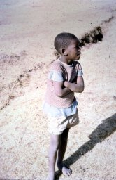 | 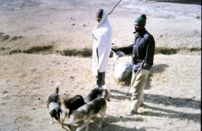 |
| Boy | Transkei people |
The geological structure — sedimentary (stratified) even at the tops of the mountains.
An occasional hexagonal or octagonal native hut. (The enormous majority are round — according to the guide, the thatching resists wind better — with some square or rectangular, and a few more elaborate, based on a rectangular style.)
The tender, delicate blues of the mountains in the dust haze, with surface detail visible.
White dust raised by the wind, against which the huts were framed.
The trees seeming more beautiful because there are so few of them. The best are eucalyptus.
A hillside looking like a tilted plain — even the huts were on an angle.
In Butterworth, where we had lunch, every time one stepped into the street one was approached by a couple of kids dressed in rags, begging with sweet soft voices for four cents for bread.
The red-blanket people put on a show for us on the King Williams Town road. The instrumental accompaniment was provided by a guitar and a didjeridoo-like instrument made from a gallon can and a length of pipe. The guitar had only five strings, the tuning being in some cases one or two semitones out. The chord progression was from a misshapen A7 to a misshapen D7. The offbeat bass and the tuneless chant combined with this to produce an eerie effect, punctuated with screams from cornets held by two other natives at odd intervals. The others danced, fought with sticks, or walked around begging for money or cigarettes.
| 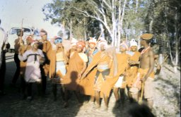 | 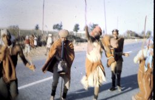 |
| Red blanket people | Dance |
The lack of brilliance in the sunset was surprising for the amount of dust in the air. A pity considerning the impressiveness of huts silhouetted against the sky.
I had my photo taken embracing a marble bust of Cecil Rhodes in the Rhodes University foyer.
| 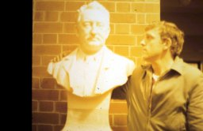 | 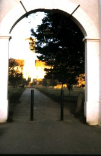 | 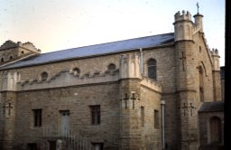 |
| Cecil Rhodes | Rhodes University | Grahamstown church |
| 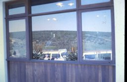 | 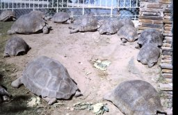 |
| Reflections | Tortoises |
Today, the third day of the trip, we motored from Grahamstown through the mountains to the coast, detoured inland to the Addo Elephant Park, had lunch in Port Elizabeth, and followed the Garden Route to Oudtshoorn. Unfortunately we were well behind schedule and missed viewing the spectacular mountains on this section. I found it not as rewarding as yesterday's journey; some impressions:
|
This morrning we entered a new world; a green world of afforestation, scrub, rich little farms and orchards. The light green grass dotted with dark green trees and off-white anthills and sheep. Two deer among the sheep. Little local colour except for a native in a donkey-drawn cart. |
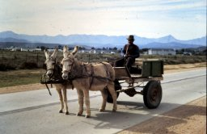 |
The coastal strip, narrow and unproductive, growing only scrub — typical coastal country. In one place, half a mile to our right the mountains rose quite abruptly from the swampy plain; half a mile to our left were quite high sandhills. Inland over the first hills was considerably richer, giving way to the twisted and torn scrubby bushes of the Addo Elephant Park, where we had incredible luck with nearly thirty elephants at a waterhole.
Lunch at the Elizabeth hotel, rather different from yesterday's roadside cafe.
The rugged mountains, thickly green-carpeted, with a mighty high bridge over a chasm under construction.
| 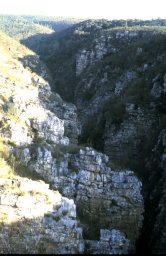 | 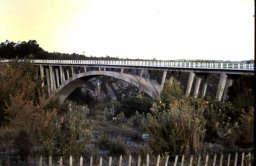 | 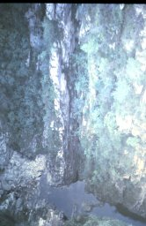 |
| Storms River ravine | Bridge | Bottom of ravine |
Pink and yellow ochre-coloured bands of soil in a cutting.
Three rows of mountains, fading into the distant golden suset.
|
This morning we visited the Cango Caves, set in grand mountains. Interesting effects were created as shadow patterns on the limestone structures by lighting (much of it coloured) in the larger caves near the entrance — it is a sobering thought that these structures rested, not only unseen, but unseeable, in total darkness for millions of years. I had the amazing experience of crawling through narrow tunnels at the back of the cave, 3/4 mile from the entrance and 600 ft. below the surface. Coming back, a young American boy with me was suffering from panic — I underestimated the distance to go but my sense of direction worked well. |
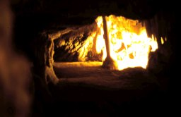 |
Coming over the Robertson Pass, on the left were red- and blue-purple painted mountains with great detail delicately shaded in. On reaching the top, we looked right and saw layer upon layer of mountains receding into the distance, progressing from greens to blues and paling.
|
The coastal strip was much less impressive, being so like much Australian country with which I am familiar. At sunset we visited the Bontebok Park at Swellendam. We saw several varieties of animal, including bontebok, glysbok(?), klipspringer, eland, and the beautiful springbok. Two bontebok were silhouetted against a glorious African sunset. |
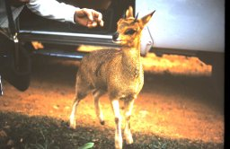 |
An early start for the drive to Cape Town and a trip on the Table Mountain cable car. Impressions:
The lights of a distant town trembling in the blue moonlight.
A beautiful dawn, with grape-coloured clouds against a bright orange, gold, and pale blue sky.
Coming over Sir Lowry's pass, our first view of the fairest Cape of all, with green fields, trees, little dams, roads, townships, the bay and beach, and behind it all Table Mountain with its head in the clouds.
The delicate pink and gold western sky with grey-blue clouds just before sunrise, contrasting with the earlier vigour of the east.
The rust colour of the first sunlight on the eastern mountains and clouds.
The cables of the Table Mountain cable car, disappearing up into the cloud.
| 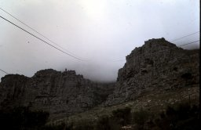 | 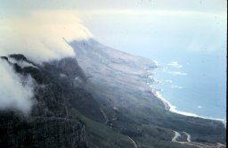 |
| Table Mountain | The view |
Cape Town — a town of narrow winding streets and old buildings, a little reminiscent of Sydney.
| 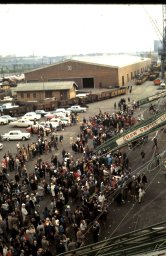 | 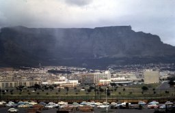 |
| Cape Town docks | Table Mountain |
So ended the trip; now a few general impressions of South Africa.
The geology — it seemed to be almost all sedimentary. The mountains were unlike any I have seen.
The roads — first class, far better than the light traffic density (except in the cities) would justify by Australian standards.
Generally — the country gives the impression of being old-fashioned, roughly the way I picture Australia about twenty years ago. This shows up in the new buildings architecture, the radio programmes, even the newspaper advertisements. It also seems to be true of its ways of thought. It is self-conscious about adverse world opinion almost to the point of paranoia. The men we drank with at Oudtshoorn last night insisted that South Africa was a good country and that we had misjudged it. Anyone who breathes the word "equality" is branded a communist; even the Roman Catholic Church is given this label for "teaching the natives that all men are equal when government policy says they're not". However there seems to be little ground for any deep-seated fears they may have; the natives are too lethargic and apathetic to turn the country into a bloodbath in the foreseeable future.
Grahamstown was called "city of Saints" because of the large number of churches, one of which is shown. The description of the Cape of Good Hope as "the fairest Cape of all" is due to Sir Francis Drake in 1580.
The animal shown in the Bontebok Park is a klipspringer; the "glysbok(?)" mentioned should be "grysbok".
I am not at all sure why it fell to me to get the panicking boy out of the Cango Caves — I had to cut short my own visit to do it.
The elephants in Addo Elephant Park are a different species from ordinary African elephants, and are considerably smaller. We saw other animals that I didn't record: lions in the Natal Lion Park (looking very motheaten), and eland and rhinos in the Queen Elizabeth Park.
| 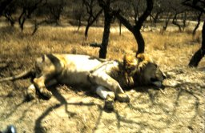 | 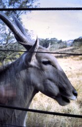 | 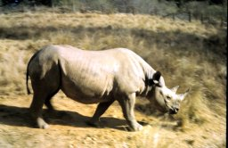 |
| Lion, Natal Lion Park | Eland, Queen Elizabeth Park | Rhino, Queen Elizabeth Park |
The point of the encounter with Cecil Rhodes in Grahamstown is that I was a Rhodes scholar and would be supported in Oxford by the Trust he set up.
We went to an ostrich farm, where we saw farmhands riding ostriches, and it was demonstrated that an ostrich can swallow a Coke bottle (apparently it would eventually be ground down by the stones in the ostrich's stomach), and that ostrich eggs are strong enough that a man can stand on them.
| 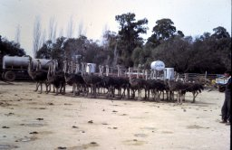 | 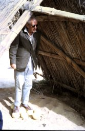 | 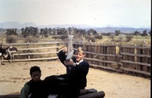 |
| Ostriches | Ostrich eggs | Ostrich swallowing bottle |
It is hopefully clear from the account that the Black homeland in the Transkei was considerably poorer country than the White regions on either side (especially Cape Province).
The Afrikaans road signs struck strangely on someone knowing no Dutch: for example, "Hoofpad" for "Main road".
While we were on Table Mountain, we had an excellent view of the harbour, with our ship (holding all our luggage and passports) tied up at the wharf, ready to leave in the early afternoon. The wind was rising, and someone said that the cable car would stop running if it got any stronger. Fortunately, we got down before this happened!